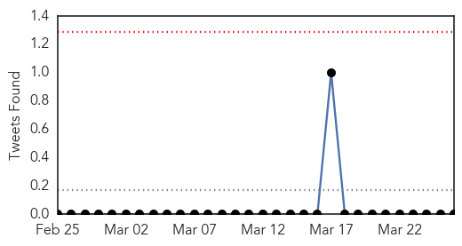
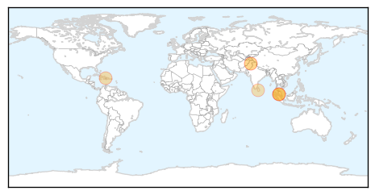
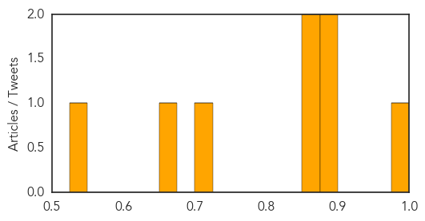
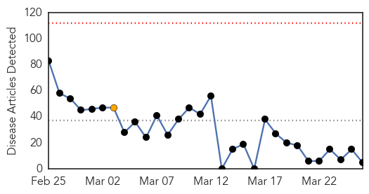
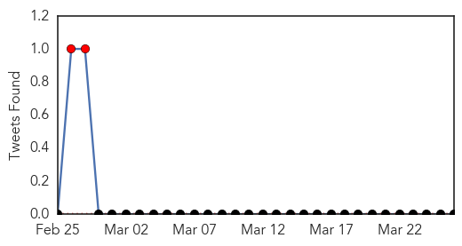
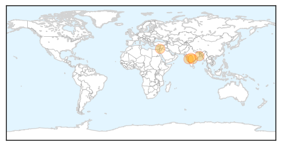

Dengue Fever
30-Day Web Trend
1 alerts, 0 warnings

30-Day Twitter Trend
0 alerts, 0 warnings

Article Locations
Article Confidences
Top Articles:
- 0.990
- Reports on Dengue Hemorrhagic Fever Findings from A. Menard and Co-Researchers Provide New Insights (A secondary dengue 4 infection in a traveler...
- 0.895
- Dengue eradication week begins in Sri Lanka from Today
- 0.893
- Health Minister: No cause for alarm over dengue
- 0.856
- Larvae of dengue mosquito found in three union councils of Rawal Town
- 0.853
- Cramped quarters raise risk - Community
- 0.715
- Using Big Data to combat dengue: Teradata interview
- 0.655
- Larvae of dengue mosquito found in three union councils of Rawal Town
- 0.550
- Anti-mosquito wall paint latest tool to fight dengue
Top Tweets:
- 0.729
- Flavivirus news: Yap issues health alert on suspected dengue, influenza - Marianas Variety: Yap... http://t.co/XmUOTPys6B pathogenposse
Swine Flu
30-Day Web Trend
0 alerts, 1 warnings

30-Day Twitter Trend
2 alerts, 0 warnings

Article Locations
Article Confidences

Top Articles:
Top Tweets:
-
No tweets found for Mar 26, 2015